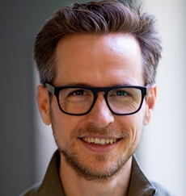
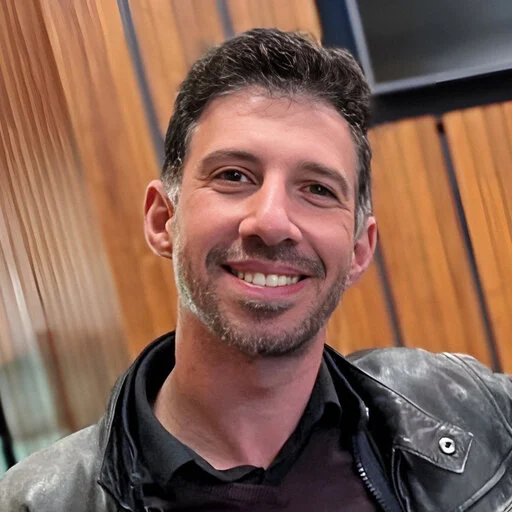

MP
Monica Perusquía-Hernández
Nara Institute of Science and Technology, Japan
Affective and physiological computing, embodiment, VR, and human-AI interaction, with a focus on wearable sensing and AI-mediated communication.
Humans remain embodied while AI becomes increasingly disembodied. We bring together researchers from HCI, affective and physiological computing, embodied cognition, neuroscience, and AI to set a research agenda for what this means for future interfaces.
For decades, human-computer interaction has been driven by three complementary forces. Large Language Models accelerate two of them while stepping back from the third.
Technology augments memory, reasoning, creativity, and decision making.
LLMs accelerate thisInterfaces move closer to perception, action, physiology, and emotion.
LLMs step back from thisComputers turn from external tools into continuous partners in everyday life.
LLMs accelerate thisWhereas wearables enabled embodied interaction and made physiological signals accessible, today's LLMs have largely retreated to disembodied interfaces. Interacting with disembodied systems is not new in itself. What is new is that these systems now take part in communication, learning, emotional support, and decision making in ways that appear almost human-like, while having no body and only limited access to the Umwelt that grounds human experience.
The resulting decoupling of intelligence from embodiment raises fundamental questions about cognition, emotion, empathy, trust, agency, and human-AI interaction. It is no longer a theoretical concern but a daily experience for millions of users. This workshop aims to establish an interdisciplinary research agenda that defines the theoretical foundations, design principles, and technological opportunities for embodied interaction in the age of disembodied intelligence.
This workshop is currently a proposal. The call below will open if the workshop is accepted.
We invite researchers and practitioners working with and designing for LLM-based systems to join a one-day workshop. We welcome participants from HCI, affective and physiological computing, psychology, neuroscience, data science, mixed reality, robotics, philosophy of mind, and digital ethics.
Position papers or case studies of 4 to 8 pages that present a project or articulate a challenge related to the workshop themes. Alternatively, you may submit a previously published paper that raises relevant questions, accompanied by a short statement of how it relates to the workshop.
Submissions use the CEUR Workshop Proceedings template, must follow the ACM accessibility guidelines, and are submitted via EasyChair. Submissions are selected by the organizing committee based on quality and contribution to the workshop themes, with a particular focus on novel interaction paradigms with AI.
Accepted papers will be published in the workshop proceedings on CEUR-WS.org. With the authors' consent, accepted papers will also be available on this website two weeks before the conference.
At least one author of each accepted submission must register for the workshop and the host conference and attend the workshop in person.
All deadlines are 23:59 Anywhere on Earth (AoE).
| 09:00 | Welcome and introductionsAims of the day and the three forces of HCI. |
|---|---|
| 09:15 | Mapping the landscapeLightning talks (5 minutes per participant) on where the state of the art is heading. |
| 10:30 | Coffee break |
| 11:00 | Grand Challenge Wall and Future Headlines 2035Collecting open challenges and imagining the headlines embodied and disembodied AI might produce a decade from now. |
| 12:30 | Lunch |
| 13:30 | Mini-panel: building cross-disciplinary bridgesFrom disembodiment to augmented throughput using the body. |
| 14:15 | Designing the future agendaBreakout groups on each theme, developing moonshot proposals for hypothetical international projects. |
| 15:30 | Coffee break |
| 16:00 | Convergence and outputsTurning ideas into a research agenda document, a collaborative roadmap, and a joint paper outline. |
| 17:00 | Closing |
Times are tentative and will be updated once the workshop date is confirmed.
We will publish a summary of guidelines and future directions on this website. It will form the basis of a joint publication by organizers and participants, including a taxonomy of embodied-disembodied interaction levels and a position paper (e.g., in Communications of the ACM). We further plan a TOCHI special issue proposal on new interaction paradigms with AI and follow-up events at SIGCHI conferences such as IUI and CUI. A Slack workspace will keep the discussion going and support collaborations between participants.
Nara Institute of Science and Technology, Japan
Affective and physiological computing, embodiment, VR, and human-AI interaction, with a focus on wearable sensing and AI-mediated communication.

Karlsruhe Institute of Technology, Germany, and University of Nottingham, UK
Wearable neurotechnology and physiological computing, studying how generative AI assistants reshape cognitive load, effort, and engagement in knowledge work.

University of Augsburg, Germany
Human-centered AI, affective computing, intelligent user interfaces, embodied conversational agents, and social signal processing.

Centrum Wiskunde & Informatica, Netherlands
Affective interactive systems, combining HCI, extended reality, and AI to measure, infer, and augment cognitive, affective, and social interaction.

University of Chicago, United States
Human-Computer Interaction, Virtual Reality, Haptics, Augmented Reality, Wearable

KTH Royal Institute of Technology, Sweden
Embodied Cognition, Sense of Connection, Virtual Reality, Transformative Experience, Self
Accepted papers will be listed here after the notification date, and available to read two weeks before the workshop.
For questions about the workshop or submissions, write to perusquia@ieee.org.